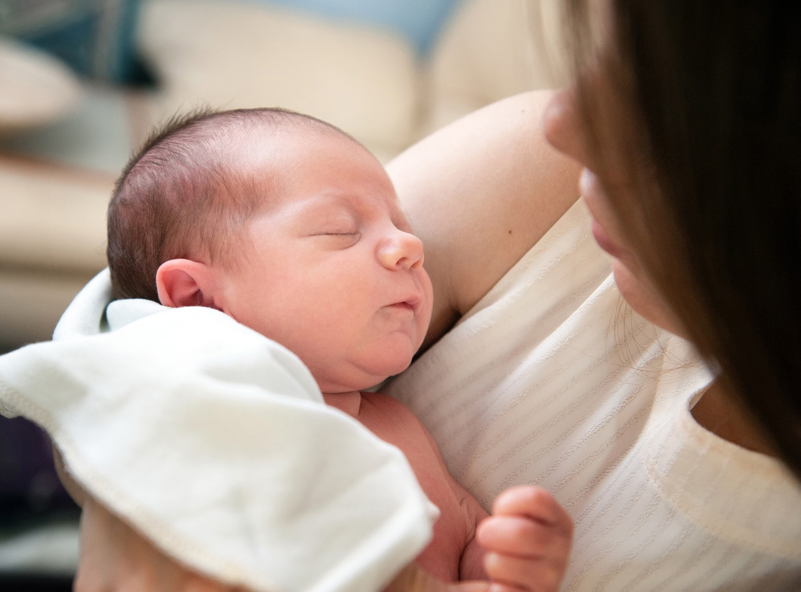
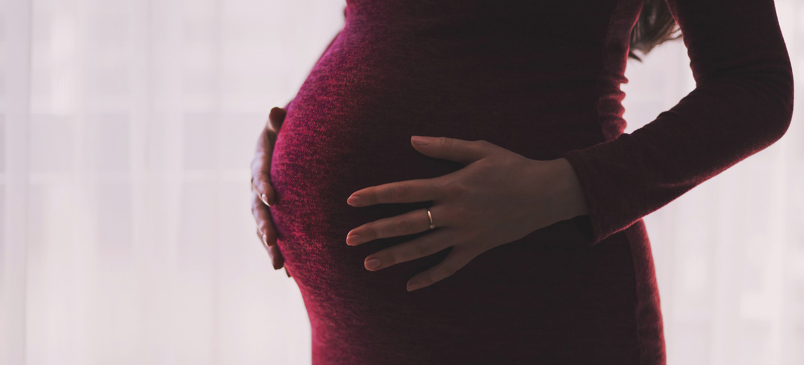

I love being a mom to my 2 year old son. He is so much fun and I enjoy coming up with great activities for us to do together!
In May, I will become a mom again to a new baby boy. I'm excited to start the newborn phase all over again. I think my older son will be a wonderful big brother. My husband and I are a little nervous about splitting our time between 2 children but I'm sure we'll figure it out.
I love design and love using my creative brain but find that it is most rewarding to use that creativity towards being a fun mom. It's been hard to be together so much during the pandemic but I try to remember that I'm lucky to get to spend a whole year home with my family. I previously commuted to NYC every day for work and never would have dreamed to get so much time together. It's definitely hard some days but I really try to stay positive!
